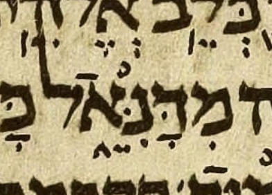
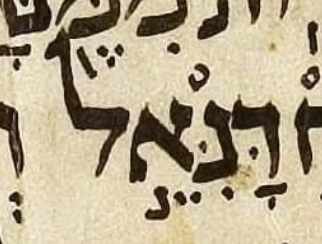
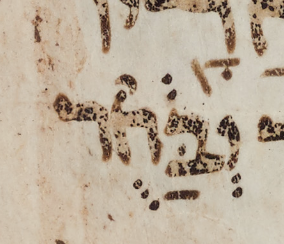
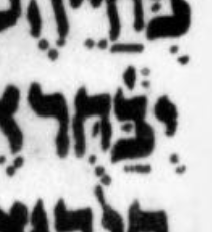
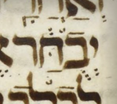
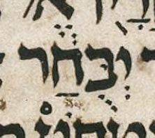

Avi’s lists and near-Aleppo ketiv pointing
State: live investigation. The 2 Kings 18:27, Ezekiel 14:14 and 14:20, and Ezekiel 28:3 manuscript readings are settled; the Introduction corrections are filed. Ben’s Ecclesiastes 9:4 decision is implemented; none of the four cases awaits an editorial decision from Ben.
The Introduction needs corrections at 2 Kings 18:27 and Ezekiel 14:14, 14:20 and 28:3. Ben supplied manuscript crops confirming the absent shin dot, the present nun dagesh, and the absent meteg. Near-Aleppo now also has Ben’s corrected dalet-carrier representation at all three Ezekiel Daniel sites. The Ecclesiastes case concerns the attachment of marks to letters or letter positions where Aleppo is missing.
These comparisons establish what Avi’s introduction, MAM’s chapter notes, and the stored near-Aleppo data say. On 2026-10-13, Ben supplied an Aleppo crop and a confident manuscript reading for 2 Kings 18:27. On the same day he supplied a crop confirming no meteg at Ezekiel 28:3, and two crops confirming dagesh in nun at Ezekiel 14:14 and 14:20. On 2026-10-14, Ben supplied a Sassoon 1053 crop and read its vowel placement as agreeing with then-current near-Aleppo, and its zaqef qatan as attached to bet rather than to position 3. He also supplied a Cambridge Add. 1753 crop and read the same vowel and accent placements as in Sassoon, with an additional dagesh in ḥet. Ben then chose to move near-Aleppo’s Ecclesiastes zaqef qatan to bet. The Ecclesiastes and Ezekiel corrections are implemented. On 2026-10-15, Ben supplied a Leningrad crop and confidently read dagesh in bet; the proposed correction to MAM’s quoted transcription is recorded below. Ben also supplied a Lisbon Bible crop and read positional fidelity in its vowels, accent and dagesh, with an additional rafeh over bet.
Sources and Hebrew notation
Avi directed Ben to the הניקוד בתוך הכתיב subsections of the introduction’s lists.
The local chapter 5 mirror records revision 3087740, with source timestamp
2026-10-08T17:34:00Z. The chapter 4 mirror records revision 3087756,
with source timestamp 2026-10-08T18:06:50Z.
The mirror manifest supplies these identities;
the mirror README explains their scope.
The Hebrew forms in this report use MAM-normal mark order. The source mirrors retain their captured bytes. Reordering a display copy does not add, remove, or relocate a mark between letters.
In near-Aleppo’s displayed notation, guillemets identify artificial carriers: «אֵ» represents tsere without an additional written ketiv consonant. The carrier’s alef is not part of the ketiv spelling. The October 13 Ezekiel decision supersedes the earlier tsere-only alef carriers; its implemented forms are shown below.
Source links identify both the local files and the exact baseline passages in Git. The baseline links remain evidence for this investigation if the maintained files later change.
1. 2 Kings 18:27: shin dot
Disposition: retain near-Aleppo’s current form without a shin dot. Ben’s confident Aleppo reading rejects the earlier proposed addition. Correct the Introduction list instead.
MAM’s ketiv letters are שניהם. The complete pointed qere is מֵימֵ֥י רַגְלֵיהֶ֖ם. This is a special ketiv/qere pair whose qere comprises two atoms. Near-Aleppo’s reviewed pointing preserves the orphan tsere positions with artificial carriers.
| Pointed form | Site | Reading | Detail |
|---|---|---|---|
| ֵשֵׁ֥נַיְֵהֶ֖ם | 2 Kings 18:27 | Introduction list | Shin has a shin dot. The initial and medial tsere are shown as the source encodes them. |
| «אֵ»שֵ֥נַיְ«אֵ»הֶ֖ם | 2 Kings 18:27 | Current near-Aleppo | Shin has no shin dot. |
| «אֵ»שֵׁ֥נַיְ«אֵ»הֶ֖ם | 2 Kings 18:27 | Earlier proposal, rejected | Adding a shin dot would contradict the supplied Aleppo reading. |
What the chapter note says
The note supplies two Aleppo ketiv representations, both without a shin dot:
The note describes the initial tsere dots as compressed into the narrow space between the atoms. Near-Aleppo’s stored form follows the note’s absence of a shin dot; the missing dot is not a consequence of its carrier notation.
Ben’s manuscript reading, 2026-10-13
Ben reports: “I see no evidence of any kind of dot, shin dot or otherwise, on top of the shin, and the manuscript (Aleppo) is well preserved here, so I feel confident in this result.” The supplied crop supports this observation: no dot is visible above shin.

The correction belongs in the Introduction
The correction is filed as MAM-basics issue 305, created by Codex on 2026-10-13 at Ben’s request, with his reading and the committed screenshot as evidence.
Remove the shin dot from the Introduction’s listed ketiv form, leaving its other marks intact. MAM’s chapter note and near-Aleppo already omit the dot and agree with Ben’s observation. This investigation records the proposed Wikisource correction; it does not edit the live Introduction or its local mirror.
Ben had suspected that the euphemistic ketiv/qere might combine pointing for a hypothetical “pronounced ketiv” with pointing for the qere. The absent shin dot removes the evidence that prompted that suspicion at this site. Ben knows of no other candidate for that suspected combination. This is his assessment of the known candidate, rather than a completed survey establishing absence throughout the corpus.
A recollection of pointed ketiv without qere
Two transcription candidates are identified; the Leningrad images remain unverified. Ben initially recalled a ketiv without qere, possibly עם, with hiriq under ayin. Later on 2026-10-13, he clarified: “It might have been אם (alef) not עם. Also the xiriq might be in Leningrad not Aleppo.” The recollection remains separate from the settled Aleppo shin-dot observation.
| Transcribed ketiv | Site | Source | Detail |
|---|---|---|---|
| אִם־ | 2 Samuel 13:33 | UXLC 2.5 capture | A ketiv element with hiriq under alef and no qere element. |
| אִם־ | 2 Samuel 15:21 | UXLC 2.5 capture | The first אם after כי; a ketiv element with hiriq under alef and no qere element. |
The local UXLC Samuel 2 capture encodes both as
<k>אִם־</k>, at lines 6600 and 7766 respectively.
Its XML header identifies the edition as UXLC 2.5, dated 1 Apr 2026.
WLC 4.22 has the same pointed string at these two sites in
1verses_04_2s1k.json,
keys 2s13:33 and 2s15:21, but includes it as ordinary verse text rather than a ketiv/qere pair.
These are observations about the transcriptions, not independent confirmation of the manuscript marks.
The other two אם ketiv-without-qere sites checked, Jeremiah 39:12 and Ruth 3:12, are unpointed in the local UXLC capture. No Leningrad image reading has yet selected which Samuel site Ben recalls.
- Introduction: chapter 5, line 430; local mirror.
- Chapter note: preserved MAM clause; local dataset.
- Stored pointing: record
BD-2Kings:18:27:1; local reviewed pointings.
2. Ezekiel 28:3: meteg under dalet
Disposition: remove the meteg from the Introduction list. Ben confirmed its absence in the supplied Aleppo crop on 2026-10-13. Near-Aleppo already omits it.
The Introduction lists מִדָּֽנִֵּ֑אל, with meteg beneath dalet. MAM’s chapter-note form מִדָּנִֵּ֑אל has no meteg. The supplied crop supports Ben’s reading: no meteg is visible beside dalet’s qamats.


The Wikisource correction remains to be made. The correction is filed as MAM-basics issue 306, with the section link, listed form and crop. This investigation supplies the technical context. The separate carrier correction below preserves the absence of meteg.
- Introduction: chapter 5, line 495, under ספר יחזקאל and הניקוד בתוך הכתיב.
- Source and current pointing: Ezekiel dataset, verse 28:3.
3. The three Ezekiel Daniel ketiv encodings
Disposition: add nun’s missing dagesh to the Introduction’s entries for Ezekiel 14:14 and 14:20. Ben’s supplied Aleppo crops settle the dagesh question at both sites.
The carrier representation was corrected at Ben’s request on 2026-10-13. Nun now has hiriq alone, matching the qere nun. Dagesh, tsere and accent are on a medial dalet carrier.
Ben specified that nun’s cluster should be exactly as in the qere, and the carrier cluster should be the “dalet version” of the qere yod’s cluster. He then explicitly instructed: “Apply the correction now”. The two Ezekiel 14 sites have munaḥ; Ezekiel 28:3 has atnaḥ.
| Pointed form | Site | Reading | Detail |
|---|---|---|---|
| דָּנִֵ֣אל | Ezekiel 14:14 | Introduction list | Source display copy; no nun dagesh in the listed form. |
| דָּנִּ֣«אֵ»אל | Ezekiel 14:14 | October 8 representation, superseded | Dagesh and accent remained on nun; tsere had an alef carrier. |
| דָּנִ«דֵּ֣»אל | Ezekiel 14:14 | Corrected near-Aleppo | Nun matches the qere nun; dalet carries the absent qere yod’s complete marks. |
| דָּנִיֵּ֣אל | Ezekiel 14:14 | Unchanged MAM qere | The qere supplies the comparison clusters. |
| דָּנִֵ֣אל | Ezekiel 14:20 | Introduction list | Source display copy; no nun dagesh in the listed form. |
| דָּנִּ֣«אֵ»אל | Ezekiel 14:20 | October 8 representation, superseded | Dagesh and accent remained on nun; tsere had an alef carrier. |
| דָּנִ«דֵּ֣»אל | Ezekiel 14:20 | Corrected near-Aleppo | Nun matches the qere nun; dalet carries the absent qere yod’s complete marks. |
| דָּנִיֵּ֣אל | Ezekiel 14:20 | Unchanged MAM qere | The qere supplies the comparison clusters. |
| מִדָּֽנִֵּ֑אל | Ezekiel 28:3 | Introduction list | Source display copy; the listed meteg at 28:3 needs correction. |
| מִדָּנִּ֑«אֵ»אל | Ezekiel 28:3 | October 8 representation, superseded | Dagesh and accent remained on nun; tsere had an alef carrier. |
| מִדָּנִ«דֵּ֑»אל | Ezekiel 28:3 | Corrected near-Aleppo | Nun matches the qere nun; dalet carries the absent qere yod’s complete marks. |
| מִדָּנִיֵּ֑אל | Ezekiel 28:3 | Unchanged MAM qere | The qere supplies the comparison clusters. |
Ben’s manuscript reading, 2026-10-13
Ben reports that the Aleppo manuscript images resolve the question in favor of dagesh in nun at Ezekiel 14:14 and 14:20. Both supplied crops show the dot inside nun. MAM’s chapter notes explicitly describe nun as having dagesh; the Introduction’s two listed forms omit it.
Ezekiel 14:14: dagesh is visible inside nun.

Ezekiel 14:20: dagesh is visible inside nun.


The crop mapping follows the munaḥ placement described in MAM’s notes: beneath nun at 14:14, and displaced beneath alef at 14:20.
The correction belongs in the Introduction
Add dagesh to nun in both entries under הניקוד בתוך הכתיב in chapter 5, ספר יחזקאל, leaving the other marks intact. This investigation records the requested correction; it does not edit Wikisource or the local mirror.
The dagesh correction at Ezekiel 14:14 and 14:20 is filed as MAM-basics issue 307, created by Codex on 2026-10-13 at Ben’s request, with both committed crops as evidence.
Where the superseded form came from
MAM’s chapter notes quote דָּנִֵּ֣אל at 14:14 and 14:20, and מִדָּנִֵּ֑אל at 28:3. The first two notes explicitly describe “the dotted nun”; 14:20 additionally describes munaḥ as pushed beneath alef. These quoted source strings supplied the nun dagesh and accent in the old representation.
The public choice log, doc_choices.py,
passage “Orphan vowels at five reviewed ketiv sites”, records the October 8 decision to move only tsere
onto a medial alef carrier. The October 13 choice, “The Daniel ketiv carriers at Ezekiel 14:14, 14:20 and 28:3”,
supersedes that representation. The old implementation entered the public repository in
commit d8f83381.
The implemented carrier contract
The dataset uses ניקוד בלי אות ובלי רווח with only parameter 1. Its GD payloads now include exactly DALET + DAGESH + TSERE + MUNAH and DALET + DAGESH + TSERE + ETNAHTA, alongside the existing MAHAPAKH payload for Isaiah 54:16. GA and GV still prohibit dagesh. The written ketiv consonants and complete qere are preserved.
The three reviewed-note targets have been refreshed and reviewed for this decision. Their original MAM clauses retain every source form and qualification as MAM context. The carrier decision governs near-Aleppo’s encoding. The crops above independently establish nun’s manuscript dagesh at Ezekiel 14:14 and 14:20; the Ezekiel 28:3 crop settles the meteg question.
- Named implementation:
phase5_readings.py, searchable passage_REVIEWED_ORPHAN_VALUES. - Closed carrier dispatch:
orphan_marks.py,GD_MUNAH_CARRIERandGD_ATNAH_CARRIER. - Preserved MAM source clauses and reviewed targets:
doc-note-review.json, the three named Ezekiel notes.
4. Ecclesiastes 9:4: marks attached to letters or positions
Disposition: the qamats question is settled for this investigation by Ben’s decision of 2026-10-14. Ben’s Sassoon 1053 and Cambridge Add. 1753 readings are recorded: both support the current near-Aleppo vowel placement. Both have zaqef qatan on bet; corrected near-Aleppo now also has it on bet. Cambridge also has dagesh in ḥet as well as bet. Ben’s decision to move near-Aleppo’s zaqef qatan from ḥet to bet is implemented. Ben’s Lisbon Bible reading supplies a contrasting arrangement that retains qere positions, including dagesh on ḥet. Aleppo is missing here.
MAM’s ketiv letters are יבחר; its pointed qere is יְחֻבַּ֔ר. Near-Aleppo’s corrected pointed ketiv is an individual editorial decision supported by Ben’s Sassoon and Cambridge readings.
| Pointed form | Site | Reading | Detail |
|---|---|---|---|
| יְחֻבַּ֔ר | Ecclesiastes 9:4 | MAM qere | Qubuts on ḥet; dagesh and pataḥ on bet. |
| בֻֿחַּ֔ | Ecclesiastes 9:4 | Ben’s Lisbon Bible reading, bet–ḥet excerpt | Qubuts and rafeh on bet, position 2; dagesh, pataḥ and zaqef qatan on ḥet, position 3. Ben interprets the rafeh as belonging to the qere ḥet at position 2. |
| יְבַּ֔חֻר | Ecclesiastes 9:4 | Ben’s Sassoon 1053 transcription | Vowels, dagesh and zaqef qatan are attached to the same letters as in the qere. The marks above ḥet are the masorah circle. |
| יְבַּ֔חֻּר | Ecclesiastes 9:4 | Ben’s Cambridge Add. 1753 transcription | Same vowel and accent placements as Sassoon, but with an additional dagesh in the ḥet. The masorah circle is above bet. |
| יְבַּחֻ֔ר | Ecclesiastes 9:4 | Former near-Aleppo ketiv, superseded | Vowels and dagesh have their qere letters, but zaqef qatan has its qere position 3, on ḥet. |
| יְבַּ֔חֻר | Ecclesiastes 9:4 | Corrected near-Aleppo ketiv | Zaqef qatan is now on bet; all marks have the same letters as in the given qere. Exact agreement with Ben’s Sassoon transcription. |
| יְבֻחָ֔ר | Ecclesiastes 9:4 | Listed Leningrad ketiv | Qubuts on bet; doubtful qamats on ḥet; the quoted form has no dagesh in bet. |
| יְבֻחַ֔ר | Ecclesiastes 9:4 | Analytical comparison | The note’s reported Leningrad arrangement with pataḥ, consistent with Ben’s qamats decision. This comparison retains the quoted form’s omission of dagesh in bet; the correction proposed below is separate from near-Aleppo’s adopted pointing. |
The transposition comparison
The choice must be stated for each mark. Ben frames the consonantal difference as a transposition: ketiv בח (bet–ḥet) corresponds to qere חב (ḥet–bet). For this comparison, take MAM’s pointed qere יְחֻבַּ֔ר as given. Number the letters in reading order, beginning with yod as position 1. Bet is at position 3 in the qere and position 2 in the ketiv; ḥet is at position 2 in the qere and position 3 in the ketiv.
The “ah” vowel can therefore be attached to bet in both forms or to position 3 in both forms. Sassoon 1053, Cambridge Add. 1753 and current near-Aleppo have the first arrangement; the reported Leningrad ketiv and Ben’s Lisbon Bible reading have the second arrangement. “Ah” here groups pataḥ and qamats for the placement question, following Ben’s decision to set aside their difference. Comparing the qere with the ketiv in this direction is an analytical framing, not a claim about the order in which a scribe wrote the marks.
Ben’s Sassoon transcription also has zaqef qatan attached to bet. Its vowels, dagesh and identified accent are therefore attached to the same letters as in the given qere. Former near-Aleppo instead had zaqef qatan attached to position 3. Corrected near-Aleppo has zaqef qatan attached to bet, agreeing with Sassoon and Cambridge on accent placement. The reported Leningrad ketiv has both vowels and zaqef qatan at their qere positions; the crop supports adding dagesh to bet, its qere letter, despite its omission from the quoted form. Cambridge agrees with Sassoon in vowel and accent placement but also has dagesh in ḥet. Lisbon instead retains qere positions for the vowels, zaqef qatan and dagesh, placing dagesh in ḥet. A rule about the vowels alone therefore does not settle the accent or dagesh placements.
Current near-Aleppo’s attachments are:
| Mark | MAM qere | Current near-Aleppo ketiv | Attachment in this comparison |
|---|---|---|---|
| Qubuts | Ḥet, position 2 | Ḥet, position 3 | Same letter |
| “Ah” vowel (pataḥ here) | Bet, position 3 | Bet, position 2 | Same letter |
| Dagesh | Bet, position 3 | Bet, position 2 | Same letter |
| Zaqef qatan | Bet, position 3 | Bet, position 2 | Same letter |
| Sheva | Yod, position 1 | Yod, position 1 | Letter and position both unchanged |
Ben’s Sassoon 1053 crop, 2026-10-14
The crop supports attaching both vowels to their qere letters; Ben also reads zaqef qatan on bet. Ben reads the “ah” vowel beneath bet, matching current near-Aleppo; qubuts is beneath ḥet. Inspection of the supplied crop supports these placements. This evidence establishes vowel placement in Sassoon 1053 independently of the note’s vague agreement clause.
Ben’s settled transcription is יְבַּ֔חֻר. He identifies zaqef qatan with bet and the marks above ḥet as Sassoon’s masorah circle. The masorah circle is an annotation marker, so it is not included in the pointed-ketiv transcription.


Ben’s Cambridge Add. 1753 crop, 2026-10-14
Cambridge has dagesh in both bet and ḥet in Ben’s reading. His transcription is יְבַּ֔חֻּר, with a masorah circle above bet. Apart from the additional dagesh in ḥet, the pointed ketiv agrees with his Sassoon transcription. Ben regards the masorah circle’s location as irrelevant to this comparison.


The extra dagesh duplicates the given qere’s single dagesh under Ben’s comparison. The ketiv bet at position 2 has dagesh, matching the qere’s letter bet. The ketiv ḥet at position 3 also has dagesh, matching the qere dagesh’s position 3. Cambridge therefore has both placements at once. Ben calls the dagesh in ḥet illegal, but emphasizes its redundancy: the dagesh on bet already supplies the attachment to the qere letter. This distribution is not explained by choosing either letter or position as the sole attachment of that dagesh. The crop does not establish an intended scribal policy.
Ben’s Lisbon Bible crop, 2026-10-15
Lisbon retains qere positions for the vowels, zaqef qatan and dagesh in Ben’s reading. The supplied crop supports his observation: qubuts is on bet at position 2, while zaqef qatan, dagesh and pataḥ are on ḥet at position 3. The relevant clusters are בֻֿ and חַּ֔. Ben describes this arrangement as “positional fidelity”: each of these marks has its qere letter-position, even when that places dagesh in the guttural ḥet.
| Mark | Given MAM qere | Lisbon ketiv, Ben’s reading | Attachment in this comparison |
|---|---|---|---|
| Qubuts | Ḥet, position 2 | Bet, position 2 | Same position |
| Pataḥ | Bet, position 3 | Ḥet, position 3 | Same position |
| Zaqef qatan | Bet, position 3 | Ḥet, position 3 | Same position |
| Dagesh | Bet, position 3 | Ḥet, position 3 | Same position, despite the guttural |
| Rafeh | No explicit rafeh in the given qere | Bet, position 2 | Ben tentatively interprets it as belonging to the qere ḥet at position 2 |
Lisbon also has rafeh over bet at position 2. Ben tentatively interprets the rafeh as belonging to the qere’s ḥet, also at position 2, rather than to the ketiv bet. Under that interpretation, the rafeh supplies another instance of positional fidelity. The rafeh is visible in the crop; its proposed relation to the qere ḥet is Ben’s interpretation.


Lisbon’s positional dagesh contrasts with Leningrad’s dagesh in bet and with Cambridge Add. 1753’s dagesh in both bet and ḥet. These differences support Ben’s interpretation that each naqdan made somewhat arbitrary choices about which marks retain their qere letter and which retain their qere letter-position. The choices can differ from mark to mark within the same pointed ketiv.
The complete doc-note, preserved identically in near-Aleppo and MAM
The near-Aleppo version is the same as the MAM version.
Near-Aleppo preserves the complete MAM note under הערת מקרא על פי המסורה.
Its own note field is empty at this site. The two text portions and their intervening break template are exactly identical
to the note in MAM’s parsed dataset and the
captured Wikisource source.
The copy below renders {{ש}} as a paragraph break; the source’s notation is retained.
=ש1,ק-מ ובדפוסים וכן בקורן וברויאר ומג"ה
ל-כתיב?!=יְבֻחָ֔ר (קמץ באות חי"ת?) ע"פ הערת ברויאר בספק. אבל מעיון בצילום כתב־היד בהגדלה נראה שהוא פת"ח למרות הטשטוש מתחת לקו (אולי סימן של מחיקה) וכן דעתו של דותן.
English translation
[MAM] agrees with Sassoon 1053, Cambridge Add. 1753, and the printed editions, and likewise with Koren, Breuer, and Miqraot Gedolot Haketer.
The Leningrad ketiv is tentatively reported with the surprising reading יְבֻחָ֔ר (qamats on the letter ḥet?), on the basis of Breuer’s note, with uncertainty. But examination of an enlarged photograph of the manuscript suggests that it is pataḥ, despite the blurring beneath the stroke (perhaps a trace of erasure); Dotan is of the same opinion.
The bracketed subject “[MAM]” makes the opening = explicit without specifying what aspect agrees.
The sigla name Sassoon 1053 (ש1), Cambridge Add. 1753
(ק-מ), Leningrad (ל), and
Miqraot Gedolot Haketer (מג"ה), as recorded in the
Introduction’s appendix.
MAM’s != means “surprisingly equals”; the preceding ? marks uncertainty.
See Sigil Decoding, “Operators used with sigils”.
The photograph assessment and Dotan’s vowel reading are claims of the source note.
The supplied Leningrad crop below supports the dagesh in bet; this investigation does not settle the vowel beneath ḥet.
Proposed correction to MAM’s Leningrad transcription, 2026-10-15
The dagesh in bet is missing from MAM’s quoted form; Ben requests adding it. Ben reads the dagesh confidently in the supplied Leningrad crop, and inspection of the crop supports that reading. Keeping the quoted qamats for purposes of this correction gives יְבֻּחָ֔ר. The qamats-versus-pataḥ question beneath ḥet remains separate.
The note already places its explicit question beside qamats on ḥet. If the scope of the tentative notation is unclear, the note should say that only qamats versus pataḥ is tentative. Ben’s dagesh reading is not tentative. This proposed source-note correction leaves near-Aleppo’s adopted pointing unchanged.


Ben’s qamats decision, 2026-10-14
Use pataḥ for the comparison and leave the qamats question closed. Ben is willing to accept the MAM note’s treatment of qamats: even if qamats is present in Leningrad, he treats it as a Leningrad quirk to exclude from MAM and near-Aleppo. This decision does not depend on establishing which vowel the manuscript has. It does not settle where the vowels belong on the pointed ketiv or whether bet has dagesh.
Ben’s near-Aleppo decision, 2026-10-14
Move zaqef qatan from ḥet to bet, giving יְבַּ֔חֻר. Ben chose this change because Sassoon 1053 and Cambridge Add. 1753 both have the accent on bet, and because all marks then retain their qere letters in this transposition. Former near-Aleppo mixed attachments: the non-accent marks retained their letters, while zaqef qatan retained position 3. The correction removes that mixture at this site.
- Vowel placement: retain pataḥ on bet and qubuts on ḥet. Sassoon 1053 and Cambridge Add. 1753 support these attachments to the same letters as in the qere. The reported Leningrad arrangement remains a comparison.
- Dagesh: retain the qere bet’s dagesh, as in Ben’s Sassoon transcription. Cambridge’s additional dagesh in ḥet is not part of the adopted form.
- Zaqef qatan: move the accent from ḥet to bet, retaining its qere letter instead of its qere position.
The maintained record E4-Ecclesiastes:9:4:0 is moved from the frozen inference set to
the individual editorial-pointing manifest.
The dataset and example edition implement the new pointing; the complete qere and source note remain intact.
What the agreement clause establishes
The clause leaves the other sources’ pointed ketiv unspecified.
The opening =ש1,ק-מ ובדפוסים וכן בקורן וברויאר ומג"ה
names the sources agreeing with MAM, but supplies no pointed form of its own.
In the captured source, the note’s נוסח template encloses the whole ketiv/qere pair:
unpointed ketiv יבחר and pointed qere
יְחֻבַּ֔ר.
The most natural reading is therefore agreement with that ketiv/qere presentation.
Restricting the clause to the qere alone would also be an interpretation, so the translation does not insert “qere”.
Even agreement with the whole pair would not determine which marks those sources place on the ketiv bet and ḥet. MAM’s pair has no pointed ketiv to compare with their pointing. Near-Aleppo’s pointed ketiv is added separately; the preserved agreement clause does not attest that added form. Only the second portion of the note quotes an explicit pointed ketiv, the qualified Leningrad form.
The Sassoon 1053 and Cambridge Add. 1753 crops now supply explicit evidence for the current near-Aleppo vowel placement. Both also support zaqef qatan on bet in Ben’s readings; Cambridge differs from Sassoon by the extra dagesh in ḥet. The named printed editions remain unchecked here for pointed-ketiv placement. The note alone does not establish those editions’ attachments of vowels, dagesh or zaqef qatan. The manuscript readings support Ben’s implemented near-Aleppo correction.
- Introduction: chapter 4, line 586; local mirror.
- Initial pointing and qualified source reading: initial Ecclesiastes dataset passage; current local dataset.
- Former inference: initial record
E4-Ecclesiastes:9:4:0. - Implemented correction: individual editorial pointings, record
E4-Ecclesiastes:9:4:0.
Investigation status
The Introduction corrections are supported by the supplied manuscript crops. The shin-dot correction is filed as MAM-basics issue 305; the meteg correction is filed as MAM-basics issue 306. The dagesh correction at Ezekiel 14:14 and 14:20 is filed as MAM-basics issue 307. The three Ezekiel carrier encodings are corrected at Ben’s request. Ecclesiastes 9:4 is corrected by moving zaqef qatan to bet. None of the four cases awaits an editorial decision from Ben.
October 14 revision: the complete Ecclesiastes note and English translation are added; MAM and near-Aleppo note identity is verified; Ben’s qamats decision is recorded. The Sassoon 1053 crop supports current near-Aleppo’s attachment of the vowels to their qere letters. Ben’s settled Sassoon transcription also attaches zaqef qatan to its qere letter, bet, agreeing with corrected near-Aleppo. Ben identifies the marks above ḥet as the masorah circle. Ben’s Cambridge Add. 1753 reading has the same vowel and accent placements as Sassoon, plus dagesh in ḥet. Its masorah circle is above bet; Ben regards the circle’s position as irrelevant. The comparison now distinguishes each mark’s attachment to a letter or a letter position. Ben’s choice to put zaqef qatan on bet is implemented, giving exact agreement with his Sassoon transcription and agreement with Cambridge’s vowel and accent placements.
October 15 Lisbon addition: Ben’s supplied crop and mark placements are recorded above, including dagesh in ḥet and rafeh over bet. His proposed interpretation of the rafeh is distinguished from its visible placement.
The chapter 5 mirror and MAM chapter notes remain faithful source records. Near-Aleppo’s corrected dataset and example pages implement the Ezekiel carrier representation and the Ecclesiastes zaqef qatan placement.